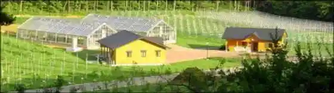
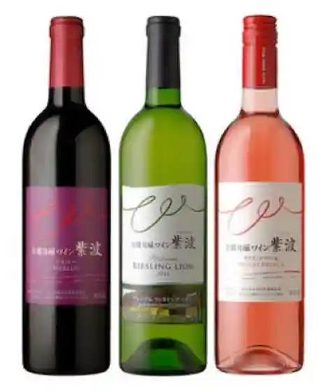
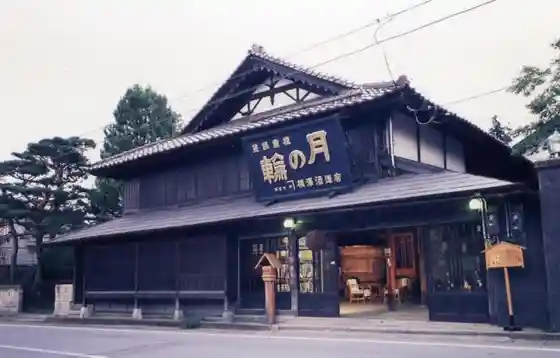

Shiwa Furutsu Park
Shiwa, Iwate · 019-676-5301 · Official / source link

Chi Wain Ji Sono Jijo Wain Shiwa
Shiwa, Iwate · 019-676-5301 · Official / source link

Iwachiku Mori no Naka no Chokubai Mise Jobanni
Shiwa, Iwate · 019-676-2135 · Official / source link

Jizake Gatsu no Wa
Shiwa, Iwate · 019-672-1133 · Official / source link

Yamaya no Mizu Basho
Shiwa, Iwate · 019-676-2292 · Official / source link
Resutoran Karin Tei
Shiwa, Iwate · 019-671-1300 · Official / source link
Hikari En Tera
Shiwa, Iwate · 019-673-7320 · Official / source link
Kumagaya Ranch Kumagaya Bokujo Chokubai Mise Resutoran Chi Yume Shin (Chimunii)
Shiwa, Iwate · 019-673-7855 · Official / source link
San Farm Cherii & Berii Garden
Shiwa, Iwate · 090-1060-7448 · Official / source link
Shiwa Rozu Garden
Shiwa, Iwate · 080-2814-8787 · Official / source link
Akazawa no Ajisai Rodo
Shiwa, Iwate · 019-676-4477 · Official / source link
Roadside Station (Shiwa)
Shiwa, Iwate · 019-671-1300 · Official / source link
Fune Kubo Cave
Shiwa, Iwate · 080-1652-6695 · Official / source link
Sanno Umi Dam
Shiwa, Iwate · 019-673-7311 · Official / source link
Goro Numa
Shiwa, Iwate · 019-676-4477 · Official / source link
Jingaoka Jin'ei Ato to Hachi Shrine
Shiwa, Iwate · 019-676-4477 · Official / source link
Higashine Yama
Shiwa, Iwate · 019-672-2111 · Official / source link
Shogen In no Gyaku Gashiwa
Shiwa, Iwate · 019-672-2111 · Official / source link
Shiga Riwa Ki Shrine
Shiwa, Iwate · 019-672-2767 · Official / source link
Shiwa Inari Shrine to Shiwa Ko Inari Shrine
Shiwa, Iwate · 019-673-7608 · Official / source link
no Village Kodo Araebisu Memorial Museum
Shiwa, Iwate · 019-676-6896 · Official / source link
Shiroyama Park
Shiwa, Iwate · 019-676-4477 · Official / source link
Toge no Eki Shiwa Furu Sato Center Resutoran Budo no Ki
Shiwa, Iwate · 019-674-2299 · Official / source link
Shiwa Kanko Budo Sono
Shiwa, Iwate · 019-674-2735 · Official / source link